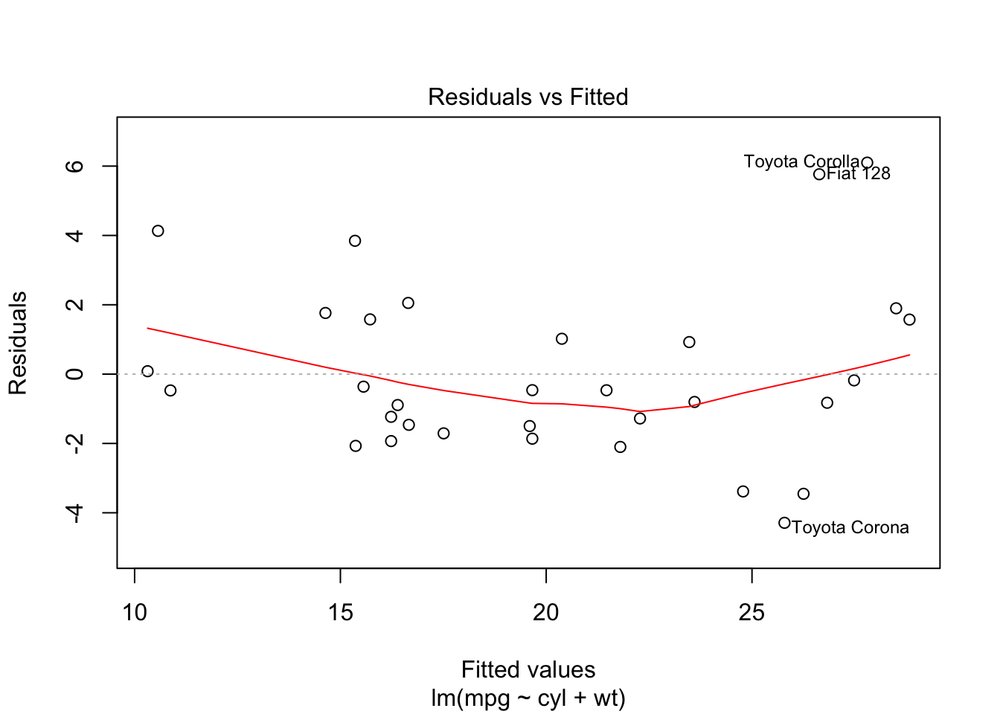
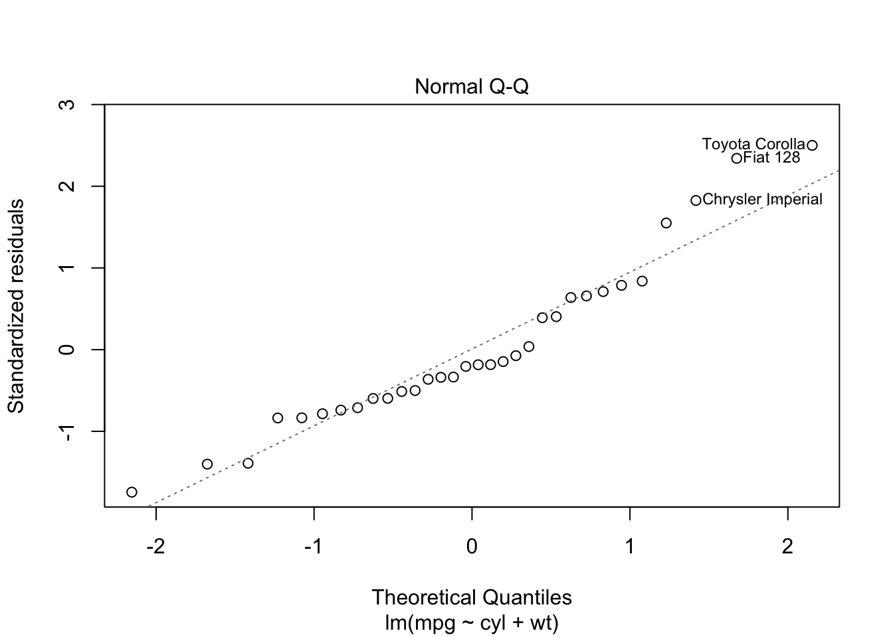
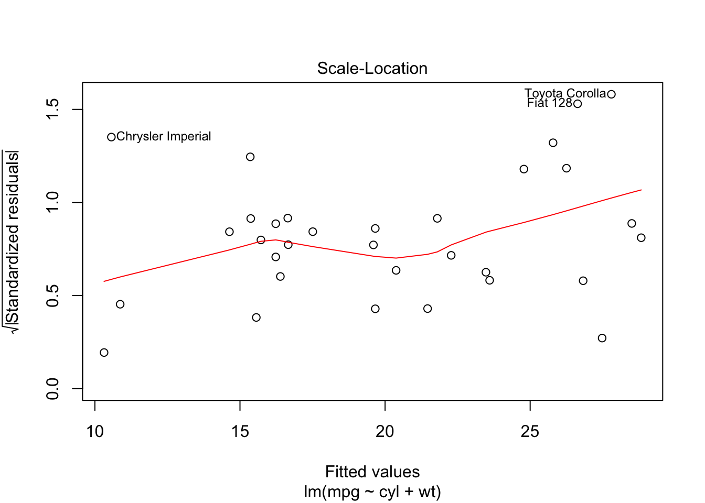
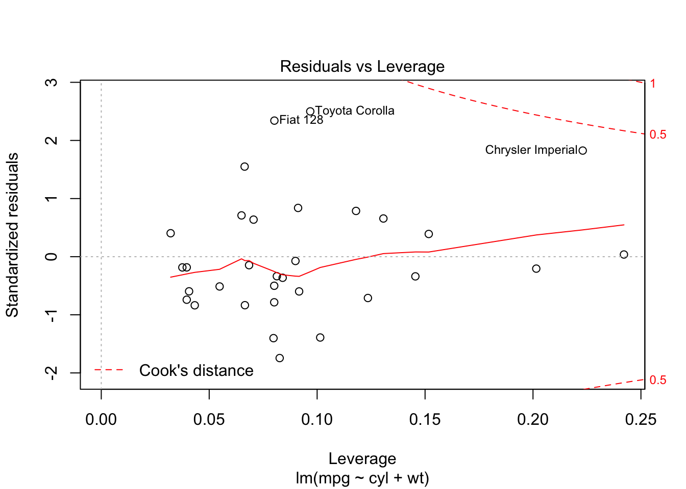

Data modelling is the reason for R’s existence, and is still used as a primary channel of release for cutting edge new advances in data statistics and modelling. As a marketer, you can take advantage of this cutting edge research in your own real-world data sets.
The choice of model can be bewildering, as the options available in R are thousand-fold. As ever, it gets easiesr if you can boil down your problem to the right question, and have some foreknowledge on what can and can’t be done with your type of data.
To get an idea of the questions you need to be answering, take a look at this decision tree for the Python machine learning module, scikit-learn:
Key questions include:
Within R, there are some norms that apply to a lot of the modelling functions out there.
A lot of model functions use this notation in R, as well as packages like reshape2()
Its a way to specify what you want the model to calculate, different from the arguments foo = "blah" you may already be familiar with. Details differ, but for formula notation they typically are closer to how you would write it out in mathematical notation.
For example, if you are running a correlation, you typically want to know how a response y varies with terms x and z. When calling this in lm() you would use:
y ~ x + z~ is a special character used in formula, and means something like “modelled by”. Note no quotes.
Using mtcars again as an example, here is a linear model made with base lm:
## Create a linear model that Miles per gallon is modelled by number of cylinders and car weight
model <- lm(mpg ~ cyl + wt, data = mtcars)This step can be a real workhorse depending on what statistical model you are applying and the amount of data, so can take several minutes (even hours!) if you are chucking alot of data at it
Now you have your model, how do you see the results? Most R functions will let you see something via summary()
summary(model)##
## Call:
## lm(formula = mpg ~ cyl + wt, data = mtcars)
##
## Residuals:
## Min 1Q Median 3Q Max
## -4.2893 -1.5512 -0.4684 1.5743 6.1004
##
## Coefficients:
## Estimate Std. Error t value Pr(>|t|)
## (Intercept) 39.6863 1.7150 23.141 < 2e-16 ***
## cyl -1.5078 0.4147 -3.636 0.001064 **
## wt -3.1910 0.7569 -4.216 0.000222 ***
## ---
## Signif. codes: 0 '***' 0.001 '**' 0.01 '*' 0.05 '.' 0.1 ' ' 1
##
## Residual standard error: 2.568 on 29 degrees of freedom
## Multiple R-squared: 0.8302, Adjusted R-squared: 0.8185
## F-statistic: 70.91 on 2 and 29 DF, p-value: 6.809e-12The output will differ depending on your model, and you should read the documentation carefully so you can interpret carefully.
In this case, it looks as if we are getting an R-squared value of 0.82 on our model and high confidence’s in our estimates for cyl and wt being correlated with mpg (which makes sense).
From the defintion of linear models, it says that if you keep the other variable constant, you lose 1.5 miles per gallon for every extra cylindar in your car, and lose 3.2 miles per gallon for every 1 extra weight.
You can also usually use predict() on the model result to find what your model predicts.
To see specific help on model predict(), plot() and summary(), add a .functionname to the help defintion. This is related to how R uses R classes e.g. ?predict.lm
For predict.lm() you can pass a newdata argument - this should hold the same arguments as the predictors you used in the model - e.g. cyl and wt in this case:
## what would be the miles per gallon for a 10 cylindar behemoth?
new_data <- data.frame(cyl = 10, wt = 5)
## you would get a hefty 8.653 mpg, according to this model
predict(model, new_data)## 1
## 8.653451Finally, you can usually plot the model. These usually aren’t of publishable standard, but instead for a quick exploratory visualisation of what you have just calculated
plot(model)
Best practice when creating models is to split your data into training, validation and test data.
This is to prevent you making overconfident predictions, that won’t work well on new data.
A typical split is 60% of your data for training, 20% for validation and 20% for testing.
more to add here
As normal in these situations, a warning on not being rigorous in your analysis approach:
If you skip best practices such as validation or training sets, there is a danger you will make overconfident conclusions. This is sadly quite common in digital marketing where overstated claims can result in more investment in your channel, but if you truely believe in a data-driven appraoch then that will make you less credible in the future once the overstated forecasts fail to arrive.